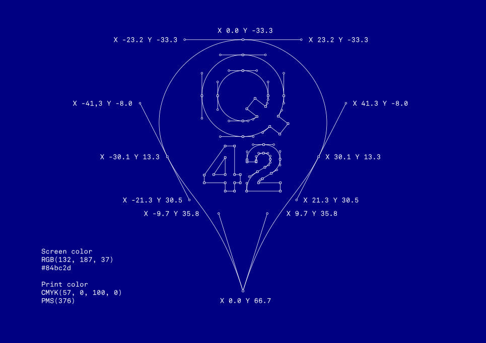

At Q42, technology is a lens for creativity. So our logo itself is also technology: a code logo.
Logos have always changed form with the times. From lead type to black-and-white xerox-friendly to full-color gradients. But logos also have been static. The Q42 logo is interactive, because our medium is interactive.
Put simply, to use our logo you insert code into your page.
The Q42 logo is all bezier curves. The control points and coordinates are in the blueprint below for you to recreate for whatever purpose.
Q42 green, in a variety of standard you might need:
That's it! Optionally, you can add attributes to <q42>:
Some Examples of renderers, attributes, and CSS animation.
You can get the logo as a vector or image file (SVG or PNG). This is not recommended because it is boring.
Rumors exist that outside of the modern world, some still use paper to get stuff done. We don't know why or what for. But if someone asks for something called a 'vector file', just give them this EPS file.
Some awesome alternative logos for use on swag:
Doodles on specific days, attract animations, hidden minigames, whatever:
© Q42
{kind=link}
{kind=link}
{kind=link}